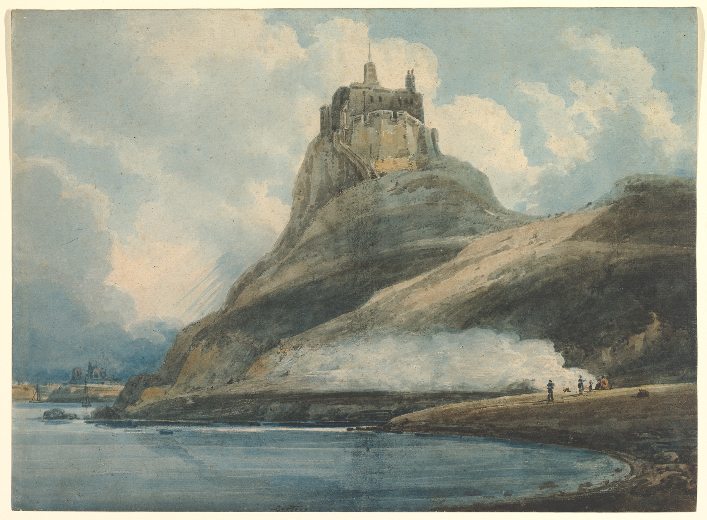
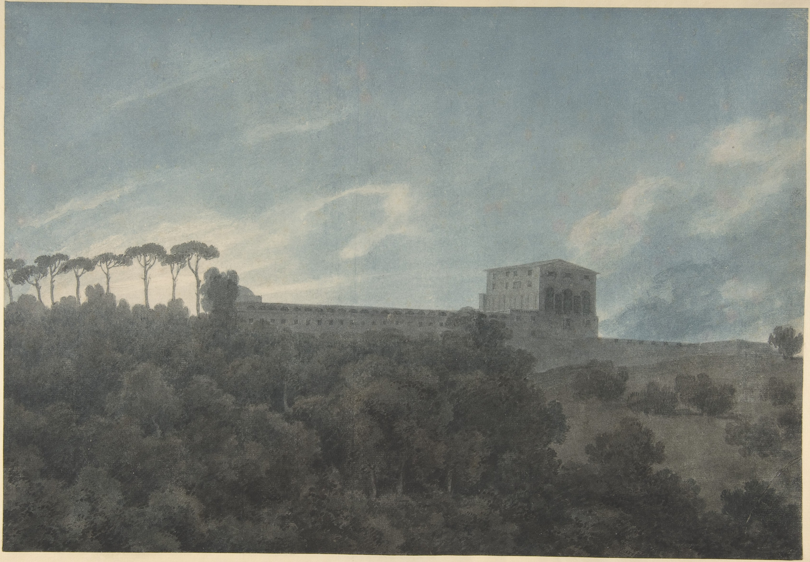
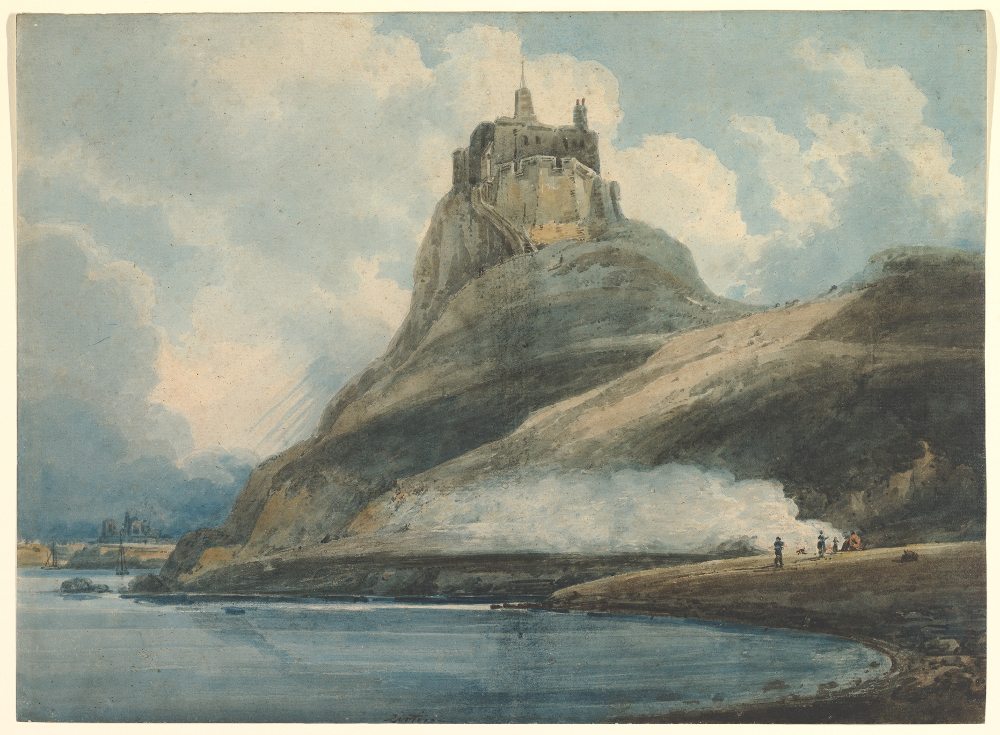
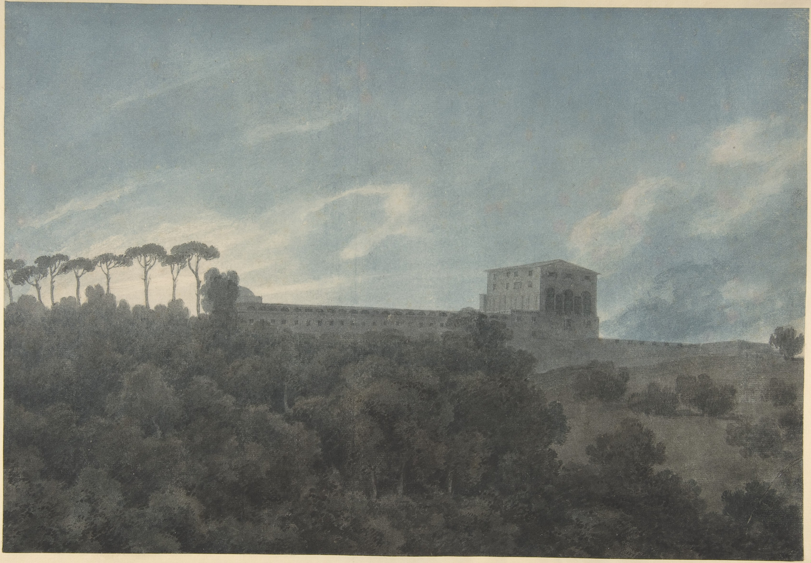
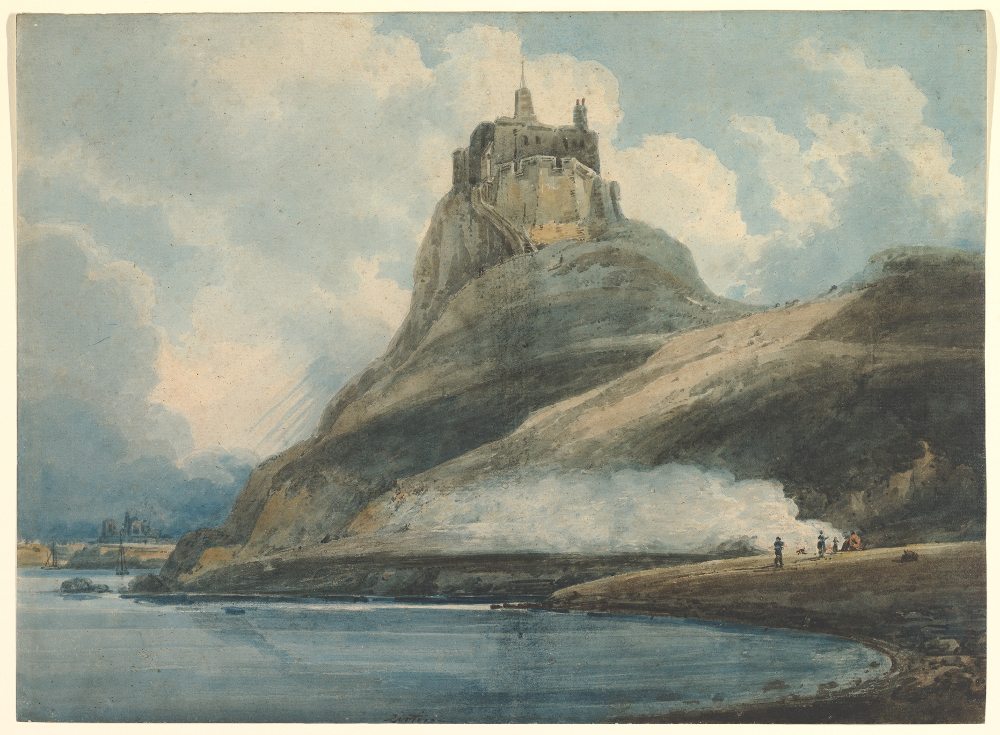
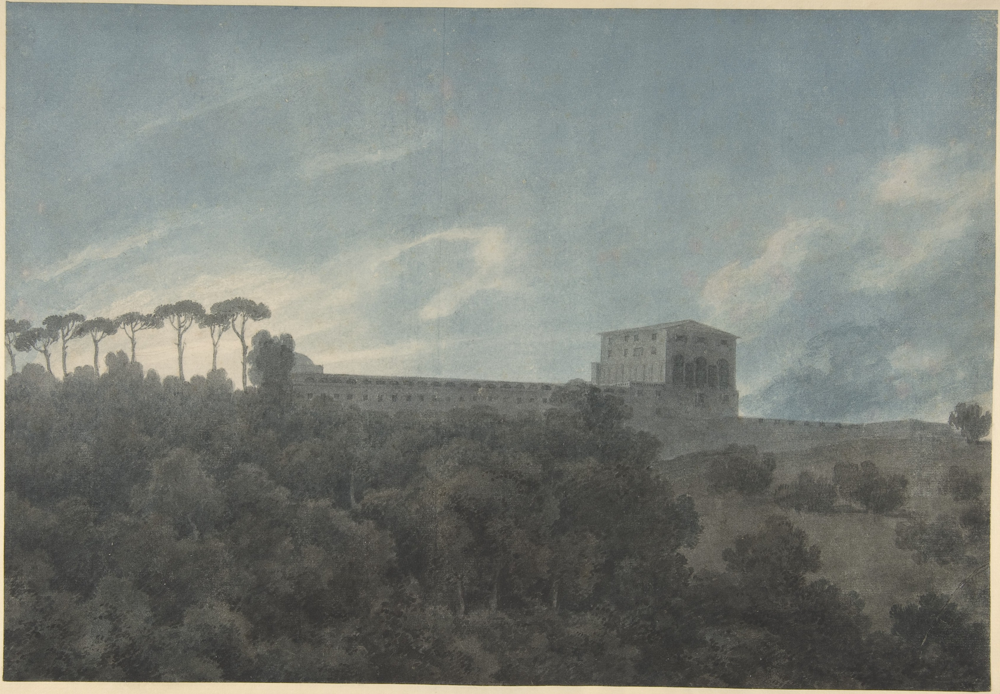

| Home | Watercolor | Digital Art | Pastels | Sculpture | Oil Paint | References |
|---|
Watercolor is a way of painting that uses water-based paints. Colors and pigments are controlled by the amount of water mixed into the paint.


Watercolor is believed to originate from Europe. Earth or vegetable fibres were grounded into a powder and mixed with gum or egg to produce a paint-like substance. These early paints were used to decorate manuscripts, draw religous displays, and enhance certain letters and border decorations. Learn more
Source: John Singer Sargent. Venice.
alongtimealone.tumblr.com(https://alongtimealone.tumblr.com/post/66746078577/phil0kalia-artvault-john-singer-sargents)
John Singer Sargent was an American artist that created
beautiful watercolor (as well as other mediums of art)
pieces that are still admired today. Some of his artworks
documented his worldwide travel, including the art shown
above of Venice, Italy.
Learn More
Source: Paul Klee. Garden in St. Germain, The European Quarter Near Tunis. 1914.
watercolourart.com(https://watercolourart.com.au/featured-artist-paul-klee/)
Paul Klee was a German artist, most recognized for his
unique and individual style. He created over 10,000
paintings and was most known for his, painting, drawing,
and watercolor.
Learn More
The materials that are used to create art using this medium
Source: J.M.W. Turner. The Blue Rigi, Sunrise.
mallgalleries.org(https://www.mallgalleries.org.uk/learning/resources/history-watercolours)
Source: Thomas Girtin. Lindisfarne Castle, Holy Island, Northumberland. 1796.
metmuseum.org(https://www.metmuseum.org/art/collection/search/341793)
Source: John Robert Cozens. View of the Villa Lante on the Janiculum in Rome. 1782.
metmuseum.org(https://www.metmuseum.org/art/collection/search/341197)
Source: W3C.
validator.org(https://validator.w3.org/)
Source: W3C.
jigsaw.org(https://jigsaw.w3.org/css-validator/)


© 2023